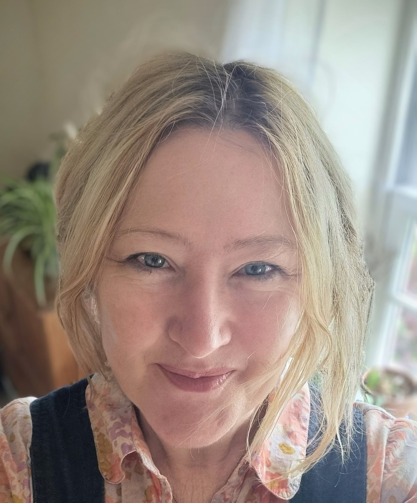
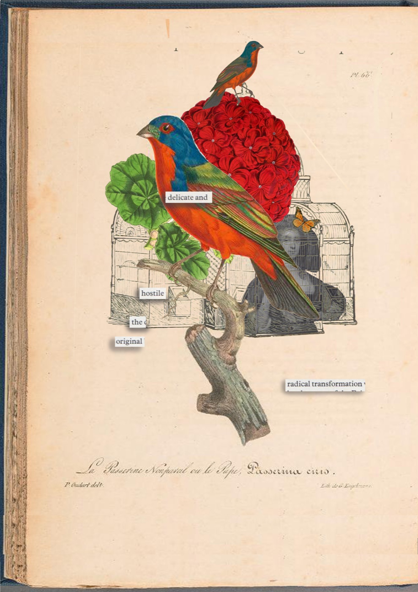
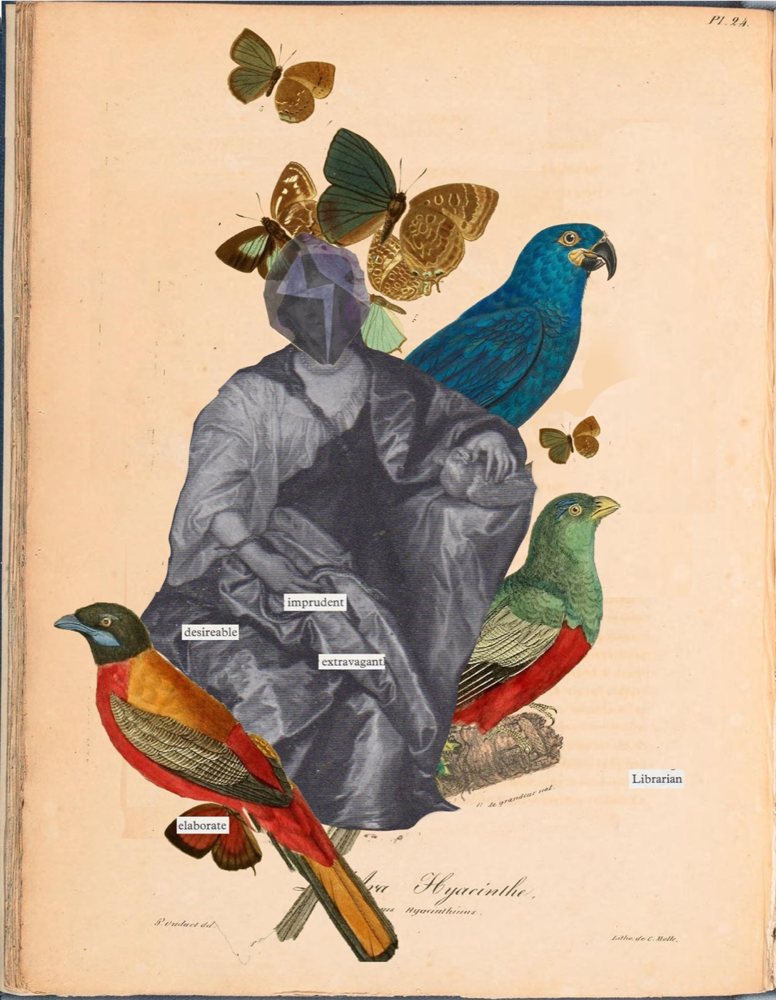
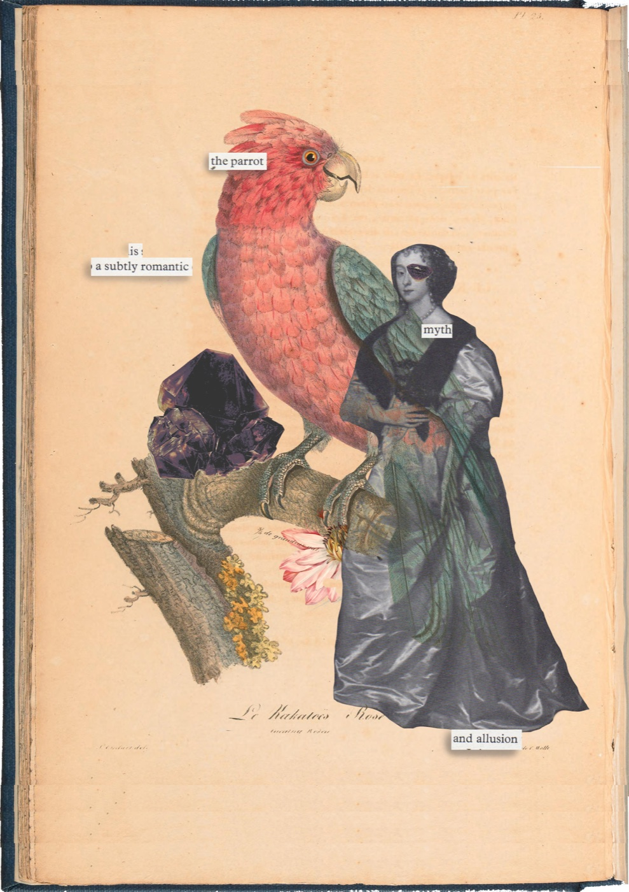

Making data more human, more situated and more honest.
My work sits between data humanism, participatory consultation, critical data studies and practice research. I use poetic, material and ecological forms to question how people are represented by institutional systems, and to design more humane ways of gathering, interpreting and communicating complex information.
That questioning extends to AI. I have worked inside the training and testing of models: critical prompt design, reinforcement learning, adversarial evaluation. I have learned to read models as mirrors as well as programmed artefacts, classification systems whose judgements carry consequences.
I work at the sharp edge of regulation, with data about lives, access, confidence, belonging and care. This is not abstract territory for me. My practice is shaped by lived experience of precarity, and by an understanding that forms, categories, thresholds and judgements can also have material consequences.
The three case studies on this site — Minor Deities, Botanica and Regulated Instruments — make one connected argument: how we represent lived experience can change our social worlds.
I am not against using large datasets. Good data cuts through cultural assumptions and comfortable anecdote. But used as a single instrument it risks sacrificing individual stories and self-definitions, which can lead to consequences no one intended. The case study, one alternative, risks failure the other way: it provides a rich individual story but does not talk to the gaps in between the single point and the whole constellation. My practice aims to design what is missing between the two by creating rigorous, arts-led ways of engaging people critically, producing accounts of lived experience that institutions can read in the tens as well as the singles and hundreds, and that can sit alongside statistical datasets and argue with them as equals. Because when metrics become the only legible account of a life, classification risks becoming unintended containment. Containment in specific environments that can damage the very living things the data was trying to support.

I come from a rural, lower participation background. I started a career in education and the arts as a single mother with no network, no connections, no financial cushion. My first job in education was as a reprographics assistant working early and late shifts that let me care for young children; then as a teaching assistant in an area of acute rural deprivation, and then, in time, HE lecturing and working at national level on the Teaching Excellence Framework subject pilot.
This is a point of understanding, not a victory narrative. I have lived inside the categories institutional data uses to describe disadvantage, and I read those classification systems from within. Data humanism, for me, is not a metropolitan aesthetic: it is what life can sometimes feel like when you have been the row in the spreadsheet.
I lead institutional strategy across inclusion in higher education policy, equality, ethics and Access and Participation planning. I authored the college's Access and Participation Plan and led a Teaching Excellence Framework submission that contributed to the award of TEF Silver in 2019. The consultation practice documented in Regulated Instruments describes my working methods.
Using Boyer's model of Scholarship, I developed and embedded scholarship within three Further Education colleges, mentoring colleagues across the sector to develop, evaluate and disseminate research.
My poetry is published in Rattle, The Adroit Journal, Sugar House Review and other journals, and has been shortlisted for the Haiku Society Touchstone Award. My collage practice, which uses found imagery, classification systems, natural history aesthetics and surrealist techniques, appears in journals including The American Psychoanalyst.
The thinking in this practice fed five accepted questions into Humanity's Last Exam, a benchmark of what current AI cannot answer, cited in Nature (2026). My doctoral research into critical and radical rurality and specialist arts education is intentionally paused, with a planned relaunch in 2027, refocused on data humanism and institutional representation.
I am a Fellow of the Royal Society of Arts, a member of the Data Visualisation Society, and a member of the Transforming Access and Student Outcomes theme working group. I hold a PGCert in Research Practices (Birmingham City University, 2021).
Selected collages bringing found natural-history imagery, historical portraiture and extracted language into new relation.



For conversations about research, collaboration or commissions: